print('hello world')hello worldJupyterLab is a highly extensible, feature-rich notebook authoring application and editing environment, and is a part of Project Jupyter, a large umbrella project centered around the goal of providing tools (and standards) for interactive computing with computational notebooks.
A computational notebook is a shareable document that combines computer code, plain language descriptions, data, rich visualizations like 3D models, charts, graphs and figures, and interactive controls. A notebook, along with an editor like JupyterLab, provides a fast interactive environment for prototyping and explaining code, exploring and visualizing data, and sharing ideas with others.
JupyterLab is a sibling to other notebook authoring applications under the Project Jupyter umbrella, like Jupyter Notebook and Jupyter Desktop. JupyterLab offers a more advanced, feature rich, customizable experience compared to Jupyter Notebook.MM

Terminal commands:
conda activate ctib
jupyter labIt then appears in your default browser.|
 - alks flaksjf laskjdf laskdfj
- alks flaksjf laskjdf laskdfj
asdflaksdfj
Pick the folder icon in the side pane menu on the left, click the big blue button and launch a notebook
Command/Ctrl Shift CCommand/Ctrl Shift Hprint('hello world')hello worldThis is formatted markdown
This is raw text
x = 0x = 1
x1x += 1
x2Edit/Undo to undo stuff in the current cellEdit/Undo Cell Operation to undo deleting, moving, merging cellsprint("Move this cell somewhere")Move this cell somewhereSome other cell
This is some more markdown with bold text and italics and showing that somthing is a code, like x = 2 + 2.
This is a quote
\(\sum_{i=0}^n i\)
\(\sum_{i=0}^n i\)
| Name | Value |
|---|---|
| foo | 2 |
| bar | 3 |
%%html
<style>
table {float:left}
</style>Make markdown cell and then drag an image into it:
Some other cell
! ls01_notebook.ipynb README.md
02_notebook.ipynb jupyter_walk_through.ipynbFast computation using vectors and matrices
list1 = [0, 1, 2, 3, 4, 5, 6, 7, 8, 9]
list2 = [9, 8, 7, 6, 5, 4, 3, 2, 1, 0]
summed = []
for i in range(len(list1)):
summed.append(list1[i] + list2[i])
summed[9, 9, 9, 9, 9, 9, 9, 9, 9, 9]import numpy as npa = np.array(list1)
b = np.array(list2)
a, b(array([0, 1, 2, 3, 4, 5, 6, 7, 8, 9]), array([9, 8, 7, 6, 5, 4, 3, 2, 1, 0]))a + barray([9, 9, 9, 9, 9, 9, 9, 9, 9, 9])a * barray([ 0, 8, 14, 18, 20, 20, 18, 14, 8, 0])a - 10array([-10, -9, -8, -7, -6, -5, -4, -3, -2, -1])a.sum()45a.mean()4.5list_of_lists = [[1, 2, 3], [4, 5, 6], [7, 8, 9]]
list_of_lists[[1, 2, 3], [4, 5, 6], [7, 8, 9]]list_of_lists[1][1]5matrix = np.array(list_of_lists)
matrixarray([[1, 2, 3],
[4, 5, 6],
[7, 8, 9]])matrix[1][1] # not efficient5matrix[1, 1] # efficient5matrix - 10array([[-9, -8, -7],
[-6, -5, -4],
[-3, -2, -1]])matrix.sum()45list_of_lists_of_lists = [[[1, 2, 3], [4, 5, 6], [7, 8, 9]], [[1, 2, 3], [4, 5, 6], [7, 8, 9]]]
list_of_lists_of_lists[[[1, 2, 3], [4, 5, 6], [7, 8, 9]], [[1, 2, 3], [4, 5, 6], [7, 8, 9]]]tensor = np.array(list_of_lists_of_lists)
tensorarray([[[1, 2, 3],
[4, 5, 6],
[7, 8, 9]],
[[1, 2, 3],
[4, 5, 6],
[7, 8, 9]]])tensor[1, 1, 1]5Fast computations on data tables (on top of Numpy).
import pandas as pddf = pd.DataFrame({'name': ['Mike', 'Mia', 'Jake'], 'weight': [82, 62, 75]})
df| name | weight | |
|---|---|---|
| 0 | Mike | 82 |
| 1 | Mia | 62 |
| 2 | Jake | 75 |
type(df)pandas.core.frame.DataFramedf = pd.DataFrame(dict(name=['Mike', 'Mia', 'Jake'], weight=[82, 62, 75]))
df| name | weight | |
|---|---|---|
| 0 | Mike | 82 |
| 1 | Mia | 62 |
| 2 | Jake | 75 |
records = [('Mike', 82), ('Mia', 62), ('Jake', 75)]
df = pd.DataFrame().from_records(records, columns=['age', 'weight'])
df| age | weight | |
|---|---|---|
| 0 | Mike | 82 |
| 1 | Mia | 62 |
| 2 | Jake | 75 |
df.indexRangeIndex(start=0, stop=3, step=1)df.index.valuesarray([0, 1, 2])df.columnsIndex(['age', 'weight'], dtype='object')df.dtypesage object
weight int64
dtype: objectAdd a column to an existing dataframe:
df['height'] = [182.5, 173.0, 192.5]
df| age | weight | height | |
|---|---|---|---|
| 0 | Mike | 82 | 182.5 |
| 1 | Mia | 62 | 173.0 |
| 2 | Jake | 75 | 192.5 |
Add another, categorical, column:
df['sex'] = pd.Categorical(['male', 'female', 'male'], categories=['female', 'male'], ordered=True)
df| age | weight | height | sex | |
|---|---|---|---|---|
| 0 | Mike | 82 | 182.5 | male |
| 1 | Mia | 62 | 173.0 | female |
| 2 | Jake | 75 | 192.5 | male |
df.dtypesage object
weight int64
height float64
sex category
dtype: objectA Series just wraps an array:
df.height.to_numpy()array([182.5, 173. , 192.5])import seaborn as sns
penguins = sns.load_dataset('penguins')penguins| species | island | bill_length_mm | bill_depth_mm | flipper_length_mm | body_mass_g | sex | |
|---|---|---|---|---|---|---|---|
| 0 | Adelie | Torgersen | 39.1 | 18.7 | 181.0 | 3750.0 | Male |
| 1 | Adelie | Torgersen | 39.5 | 17.4 | 186.0 | 3800.0 | Female |
| 2 | Adelie | Torgersen | 40.3 | 18.0 | 195.0 | 3250.0 | Female |
| 3 | Adelie | Torgersen | NaN | NaN | NaN | NaN | NaN |
| 4 | Adelie | Torgersen | 36.7 | 19.3 | 193.0 | 3450.0 | Female |
| ... | ... | ... | ... | ... | ... | ... | ... |
| 339 | Gentoo | Biscoe | NaN | NaN | NaN | NaN | NaN |
| 340 | Gentoo | Biscoe | 46.8 | 14.3 | 215.0 | 4850.0 | Female |
| 341 | Gentoo | Biscoe | 50.4 | 15.7 | 222.0 | 5750.0 | Male |
| 342 | Gentoo | Biscoe | 45.2 | 14.8 | 212.0 | 5200.0 | Female |
| 343 | Gentoo | Biscoe | 49.9 | 16.1 | 213.0 | 5400.0 | Male |
344 rows × 7 columns
penguins.dtypesspecies object
island object
bill_length_mm float64
bill_depth_mm float64
flipper_length_mm float64
body_mass_g float64
sex object
dtype: objectpenguins.head()| species | island | bill_length_mm | bill_depth_mm | flipper_length_mm | body_mass_g | sex | |
|---|---|---|---|---|---|---|---|
| 0 | Adelie | Torgersen | 39.1 | 18.7 | 181.0 | 3750.0 | Male |
| 1 | Adelie | Torgersen | 39.5 | 17.4 | 186.0 | 3800.0 | Female |
| 2 | Adelie | Torgersen | 40.3 | 18.0 | 195.0 | 3250.0 | Female |
| 3 | Adelie | Torgersen | NaN | NaN | NaN | NaN | NaN |
| 4 | Adelie | Torgersen | 36.7 | 19.3 | 193.0 | 3450.0 | Female |
penguins.tail()| species | island | bill_length_mm | bill_depth_mm | flipper_length_mm | body_mass_g | sex | |
|---|---|---|---|---|---|---|---|
| 339 | Gentoo | Biscoe | NaN | NaN | NaN | NaN | NaN |
| 340 | Gentoo | Biscoe | 46.8 | 14.3 | 215.0 | 4850.0 | Female |
| 341 | Gentoo | Biscoe | 50.4 | 15.7 | 222.0 | 5750.0 | Male |
| 342 | Gentoo | Biscoe | 45.2 | 14.8 | 212.0 | 5200.0 | Female |
| 343 | Gentoo | Biscoe | 49.9 | 16.1 | 213.0 | 5400.0 | Male |
penguins['flipper_length_mm']0 181.0
1 186.0
2 195.0
3 NaN
4 193.0
...
339 NaN
340 215.0
341 222.0
342 212.0
343 213.0
Name: flipper_length_mm, Length: 344, dtype: float64penguins.flipper_length_mm0 181.0
1 186.0
2 195.0
3 NaN
4 193.0
...
339 NaN
340 215.0
341 222.0
342 212.0
343 213.0
Name: flipper_length_mm, Length: 344, dtype: float64type(penguins.flipper_length_mm)pandas.core.series.Seriespenguins.bill_depth_mm - 10000 -981.3
1 -982.6
2 -982.0
3 NaN
4 -980.7
...
339 NaN
340 -985.7
341 -984.3
342 -985.2
343 -983.9
Name: bill_depth_mm, Length: 344, dtype: float64penguins.bill_depth_mm * penguins.flipper_length_mm0 3384.7
1 3236.4
2 3510.0
3 NaN
4 3724.9
...
339 NaN
340 3074.5
341 3485.4
342 3137.6
343 3429.3
Length: 344, dtype: float64penguins.loc[4, 'island']'Torgersen'penguins.loc[4]species Adelie
island Torgersen
bill_length_mm 36.7
bill_depth_mm 19.3
flipper_length_mm 193.0
body_mass_g 3450.0
sex Female
Name: 4, dtype: objectpenguins['bill_depth_mm']0 18.7
1 17.4
2 18.0
3 NaN
4 19.3
...
339 NaN
340 14.3
341 15.7
342 14.8
343 16.1
Name: bill_depth_mm, Length: 344, dtype: float64penguins.bill_depth_mm0 18.7
1 17.4
2 18.0
3 NaN
4 19.3
...
339 NaN
340 14.3
341 15.7
342 14.8
343 16.1
Name: bill_depth_mm, Length: 344, dtype: float64penguins.loc[40:45, ['island', 'body_mass_g']]| island | body_mass_g | |
|---|---|---|
| 40 | Dream | 3150.0 |
| 41 | Dream | 3900.0 |
| 42 | Dream | 3100.0 |
| 43 | Dream | 4400.0 |
| 44 | Dream | 3000.0 |
| 45 | Dream | 4600.0 |
idx = penguins.bill_length_mm > 55
idx0 False
1 False
2 False
3 False
4 False
...
339 False
340 False
341 False
342 False
343 False
Name: bill_length_mm, Length: 344, dtype: boolpenguins.loc[idx]| species | island | bill_length_mm | bill_depth_mm | flipper_length_mm | body_mass_g | sex | |
|---|---|---|---|---|---|---|---|
| 169 | Chinstrap | Dream | 58.0 | 17.8 | 181.0 | 3700.0 | Female |
| 215 | Chinstrap | Dream | 55.8 | 19.8 | 207.0 | 4000.0 | Male |
| 253 | Gentoo | Biscoe | 59.6 | 17.0 | 230.0 | 6050.0 | Male |
| 321 | Gentoo | Biscoe | 55.9 | 17.0 | 228.0 | 5600.0 | Male |
| 335 | Gentoo | Biscoe | 55.1 | 16.0 | 230.0 | 5850.0 | Male |
penguins.loc[(penguins.bill_length_mm > 55) & (penguins.sex == 'Female')]| species | island | bill_length_mm | bill_depth_mm | flipper_length_mm | body_mass_g | sex | |
|---|---|---|---|---|---|---|---|
| 169 | Chinstrap | Dream | 58.0 | 17.8 | 181.0 | 3700.0 | Female |
penguins| species | island | bill_length_mm | bill_depth_mm | flipper_length_mm | body_mass_g | sex | |
|---|---|---|---|---|---|---|---|
| 0 | Adelie | Torgersen | 39.1 | 18.7 | 181.0 | 3750.0 | Male |
| 1 | Adelie | Torgersen | 39.5 | 17.4 | 186.0 | 3800.0 | Female |
| 2 | Adelie | Torgersen | 40.3 | 18.0 | 195.0 | 3250.0 | Female |
| 3 | Adelie | Torgersen | NaN | NaN | NaN | NaN | NaN |
| 4 | Adelie | Torgersen | 36.7 | 19.3 | 193.0 | 3450.0 | Female |
| ... | ... | ... | ... | ... | ... | ... | ... |
| 339 | Gentoo | Biscoe | NaN | NaN | NaN | NaN | NaN |
| 340 | Gentoo | Biscoe | 46.8 | 14.3 | 215.0 | 4850.0 | Female |
| 341 | Gentoo | Biscoe | 50.4 | 15.7 | 222.0 | 5750.0 | Male |
| 342 | Gentoo | Biscoe | 45.2 | 14.8 | 212.0 | 5200.0 | Female |
| 343 | Gentoo | Biscoe | 49.9 | 16.1 | 213.0 | 5400.0 | Male |
344 rows × 7 columns
df = penguins.set_index(['species', 'sex', 'island'])
df.head(10)| bill_length_mm | bill_depth_mm | flipper_length_mm | body_mass_g | |||
|---|---|---|---|---|---|---|
| species | sex | island | ||||
| Adelie | Male | Torgersen | 39.1 | 18.7 | 181.0 | 3750.0 |
| Female | Torgersen | 39.5 | 17.4 | 186.0 | 3800.0 | |
| Torgersen | 40.3 | 18.0 | 195.0 | 3250.0 | ||
| NaN | Torgersen | NaN | NaN | NaN | NaN | |
| Female | Torgersen | 36.7 | 19.3 | 193.0 | 3450.0 | |
| Male | Torgersen | 39.3 | 20.6 | 190.0 | 3650.0 | |
| Female | Torgersen | 38.9 | 17.8 | 181.0 | 3625.0 | |
| Male | Torgersen | 39.2 | 19.6 | 195.0 | 4675.0 | |
| NaN | Torgersen | 34.1 | 18.1 | 193.0 | 3475.0 | |
| Torgersen | 42.0 | 20.2 | 190.0 | 4250.0 |
df.reset_index()| species | sex | island | bill_length_mm | bill_depth_mm | flipper_length_mm | body_mass_g | |
|---|---|---|---|---|---|---|---|
| 0 | Adelie | Male | Torgersen | 39.1 | 18.7 | 181.0 | 3750.0 |
| 1 | Adelie | Female | Torgersen | 39.5 | 17.4 | 186.0 | 3800.0 |
| 2 | Adelie | Female | Torgersen | 40.3 | 18.0 | 195.0 | 3250.0 |
| 3 | Adelie | NaN | Torgersen | NaN | NaN | NaN | NaN |
| 4 | Adelie | Female | Torgersen | 36.7 | 19.3 | 193.0 | 3450.0 |
| ... | ... | ... | ... | ... | ... | ... | ... |
| 339 | Gentoo | NaN | Biscoe | NaN | NaN | NaN | NaN |
| 340 | Gentoo | Female | Biscoe | 46.8 | 14.3 | 215.0 | 4850.0 |
| 341 | Gentoo | Male | Biscoe | 50.4 | 15.7 | 222.0 | 5750.0 |
| 342 | Gentoo | Female | Biscoe | 45.2 | 14.8 | 212.0 | 5200.0 |
| 343 | Gentoo | Male | Biscoe | 49.9 | 16.1 | 213.0 | 5400.0 |
344 rows × 7 columns
sorted_df = penguins.sort_values(by="bill_length_mm")
sorted_df.head()| species | island | bill_length_mm | bill_depth_mm | flipper_length_mm | body_mass_g | sex | |
|---|---|---|---|---|---|---|---|
| 142 | Adelie | Dream | 32.1 | 15.5 | 188.0 | 3050.0 | Female |
| 98 | Adelie | Dream | 33.1 | 16.1 | 178.0 | 2900.0 | Female |
| 70 | Adelie | Torgersen | 33.5 | 19.0 | 190.0 | 3600.0 | Female |
| 92 | Adelie | Dream | 34.0 | 17.1 | 185.0 | 3400.0 | Female |
| 8 | Adelie | Torgersen | 34.1 | 18.1 | 193.0 | 3475.0 | NaN |
sorted_df.index.valuesarray([142, 98, 70, 92, 8, 18, 54, 80, 14, 100, 52, 83, 124,
25, 66, 74, 136, 60, 90, 118, 68, 22, 42, 48, 150, 148,
78, 94, 120, 86, 34, 64, 58, 40, 15, 147, 4, 82, 132,
87, 44, 138, 77, 31, 144, 117, 84, 47, 133, 62, 38, 59,
21, 121, 102, 103, 10, 20, 11, 149, 104, 28, 96, 108, 134,
110, 107, 23, 88, 130, 13, 106, 116, 16, 24, 126, 36, 89,
6, 128, 145, 56, 0, 35, 146, 7, 5, 30, 1, 32, 114,
45, 50, 72, 93, 112, 105, 139, 71, 39, 51, 137, 140, 122,
97, 2, 27, 29, 125, 141, 26, 57, 143, 95, 41, 230, 182,
33, 76, 101, 135, 119, 46, 63, 91, 67, 12, 61, 85, 123,
55, 127, 151, 65, 326, 69, 236, 53, 9, 79, 113, 37, 49,
172, 184, 206, 17, 256, 115, 260, 75, 251, 81, 244, 131, 278,
109, 174, 99, 228, 328, 306, 216, 332, 288, 265, 276, 258, 129,
43, 257, 246, 336, 314, 268, 304, 275, 241, 252, 272, 208, 298,
299, 269, 342, 157, 280, 262, 226, 155, 232, 277, 195, 312, 266,
111, 211, 214, 204, 282, 73, 284, 234, 166, 160, 19, 158, 245,
220, 286, 238, 334, 281, 193, 243, 170, 180, 291, 294, 293, 225,
274, 152, 242, 162, 270, 227, 176, 325, 229, 340, 213, 317, 190,
164, 338, 322, 324, 250, 302, 310, 296, 187, 308, 188, 224, 290,
247, 329, 202, 248, 292, 318, 233, 255, 271, 173, 320, 295, 259,
239, 222, 337, 192, 199, 231, 300, 323, 254, 171, 237, 235, 209,
316, 313, 179, 287, 263, 261, 217, 186, 331, 201, 285, 343, 303,
153, 221, 223, 249, 198, 273, 210, 219, 240, 168, 279, 341, 267,
330, 167, 178, 264, 175, 289, 205, 305, 218, 197, 315, 196, 194,
185, 297, 319, 154, 159, 161, 307, 203, 333, 200, 163, 212, 165,
177, 189, 309, 207, 311, 301, 156, 181, 327, 191, 183, 283, 335,
215, 321, 169, 253, 3, 339])Click to the left of an output cell to enable/disable scrolling of the output (usefull for large amounts of output).
sorted_df.loc[0]species Adelie
island Torgersen
bill_length_mm 39.1
bill_depth_mm 18.7
flipper_length_mm 181.0
body_mass_g 3750.0
sex Male
Name: 0, dtype: objectsorted_df.flipper_length_mm[0]181.0sorted_df.iloc[0] # iloc !!!species Adelie
island Dream
bill_length_mm 32.1
bill_depth_mm 15.5
flipper_length_mm 188.0
body_mass_g 3050.0
sex Female
Name: 142, dtype: objectsorted_df.flipper_length_mm.iloc[0]188.0penguins.describe()| bill_length_mm | bill_depth_mm | flipper_length_mm | body_mass_g | |
|---|---|---|---|---|
| count | 342.000000 | 342.000000 | 342.000000 | 342.000000 |
| mean | 43.921930 | 17.151170 | 200.915205 | 4201.754386 |
| std | 5.459584 | 1.974793 | 14.061714 | 801.954536 |
| min | 32.100000 | 13.100000 | 172.000000 | 2700.000000 |
| 25% | 39.225000 | 15.600000 | 190.000000 | 3550.000000 |
| 50% | 44.450000 | 17.300000 | 197.000000 | 4050.000000 |
| 75% | 48.500000 | 18.700000 | 213.000000 | 4750.000000 |
| max | 59.600000 | 21.500000 | 231.000000 | 6300.000000 |
penguins.bill_length_mm.mean()43.9219298245614penguins.bill_length_mm.count()342penguins.groupby('island')<pandas.core.groupby.generic.DataFrameGroupBy object at 0x15c85ab00>Aggregating produces a single value for each variable in each group:
Means for all numeric variables for each island:
penguins.groupby('island').aggregate("mean", numeric_only=True)| bill_length_mm | bill_depth_mm | flipper_length_mm | body_mass_g | |
|---|---|---|---|---|
| island | ||||
| Biscoe | 45.257485 | 15.874850 | 209.706587 | 4716.017964 |
| Dream | 44.167742 | 18.344355 | 193.072581 | 3712.903226 |
| Torgersen | 38.950980 | 18.429412 | 191.196078 | 3706.372549 |
penguins.groupby('island').mean(numeric_only=True)| bill_length_mm | bill_depth_mm | flipper_length_mm | body_mass_g | |
|---|---|---|---|---|
| island | ||||
| Biscoe | 45.257485 | 15.874850 | 209.706587 | 4716.017964 |
| Dream | 44.167742 | 18.344355 | 193.072581 | 3712.903226 |
| Torgersen | 38.950980 | 18.429412 | 191.196078 | 3706.372549 |
Means for bill_length_mm and flipper_length_mm:
penguins.groupby('island')[['bill_length_mm', 'flipper_length_mm']].mean()| bill_length_mm | flipper_length_mm | |
|---|---|---|
| island | ||
| Biscoe | 45.257485 | 209.706587 |
| Dream | 44.167742 | 193.072581 |
| Torgersen | 38.950980 | 191.196078 |
Just for flipper_length_mm:
penguins.groupby('island').flipper_length_mm.mean()island
Biscoe 209.706587
Dream 193.072581
Torgersen 191.196078
Name: flipper_length_mm, dtype: float64Transforming produces new colums with the same length as the input:
penguins.groupby('island')[['bill_length_mm', 'flipper_length_mm']].transform("mean")| bill_length_mm | flipper_length_mm | |
|---|---|---|
| 0 | 38.950980 | 191.196078 |
| 1 | 38.950980 | 191.196078 |
| 2 | 38.950980 | 191.196078 |
| 3 | 38.950980 | 191.196078 |
| 4 | 38.950980 | 191.196078 |
| ... | ... | ... |
| 339 | 45.257485 | 209.706587 |
| 340 | 45.257485 | 209.706587 |
| 341 | 45.257485 | 209.706587 |
| 342 | 45.257485 | 209.706587 |
| 343 | 45.257485 | 209.706587 |
344 rows × 2 columns
def z_value(sr):
return (sr - sr.mean()) / sr.std()
penguins.groupby('island')[['bill_length_mm', 'flipper_length_mm']].transform(z_value)| bill_length_mm | flipper_length_mm | |
|---|---|---|
| 0 | 0.049258 | -1.636022 |
| 1 | 0.181475 | -0.833742 |
| 2 | 0.445910 | 0.610362 |
| 3 | NaN | NaN |
| 4 | -0.744048 | 0.289450 |
| ... | ... | ... |
| 339 | NaN | NaN |
| 340 | 0.323193 | 0.374297 |
| 341 | 1.077478 | 0.869267 |
| 342 | -0.012044 | 0.162167 |
| 343 | 0.972717 | 0.232877 |
344 rows × 2 columns
Flexible method allowing any operation on grouped data.
Return a single value:
def fun(df):
return df.bill_length_mm + df.flipper_length_mm.mean() / df.body_mass_g
penguins.groupby('island').apply(fun)#.to_frame('my_stat')island
Biscoe 20 37.861678
21 37.758252
22 35.955186
23 38.253090
24 38.855186
...
Torgersen 127 41.544464
128 39.062687
129 44.147799
130 38.557503
131 43.154627
Length: 344, dtype: float64Return a dataframe:
def fun(df):
return pd.DataFrame({'sqrt_bill': np.sqrt(df.bill_length_mm),
'bill_squared': df.bill_length_mm**2})
penguins.groupby('island').apply(fun)| sqrt_bill | bill_squared | ||
|---|---|---|---|
| island | |||
| Biscoe | 20 | 6.148170 | 1428.84 |
| 21 | 6.140033 | 1421.29 | |
| 22 | 5.991661 | 1288.81 | |
| 23 | 6.180615 | 1459.24 | |
| 24 | 6.228965 | 1505.44 | |
| ... | ... | ... | ... |
| Torgersen | 127 | 6.442049 | 1722.25 |
| 128 | 6.244998 | 1521.00 | |
| 129 | 6.640783 | 1944.81 | |
| 130 | 6.204837 | 1482.25 | |
| 131 | 6.565059 | 1857.61 |
344 rows × 2 columns
import matplotlib.pyplot as plt
import seaborn as sns
sns.set_style("darkgrid")
# make graphics sharper on a good screen
from matplotlib_inline.backend_inline import set_matplotlib_formats
set_matplotlib_formats('retina', 'png')plt.scatter(penguins.bill_length_mm, penguins.flipper_length_mm) ; # semi colon makes last value None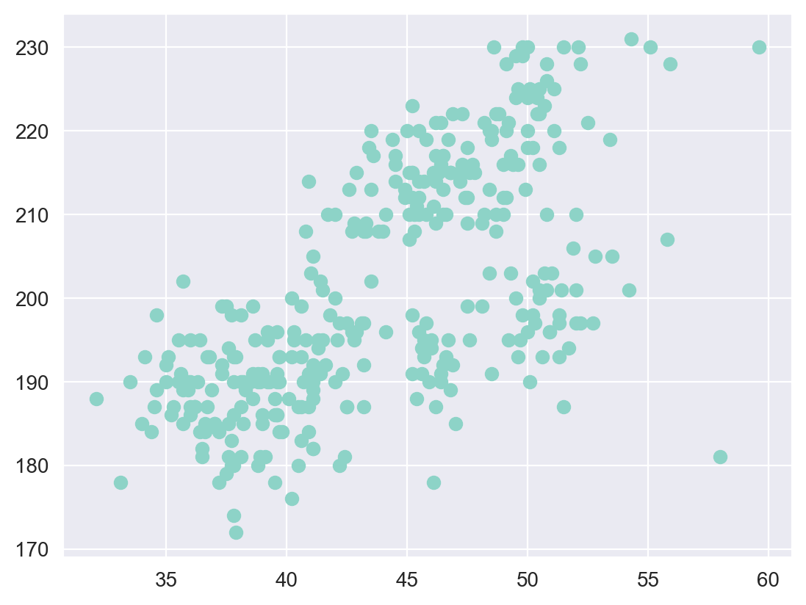
sns.set_style("ticks")
# sns.set_style("darkgrid")
# sns.set_style("whitegrid")
# sns.set_style("white")
# sns.set_style("dark")
plt.scatter(penguins.bill_length_mm, penguins.flipper_length_mm)
sns.despine()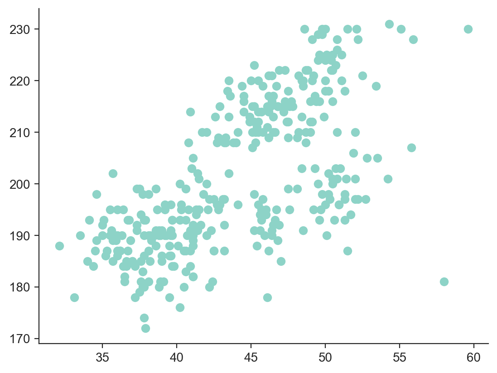
plt.hist(penguins.bill_length_mm) ;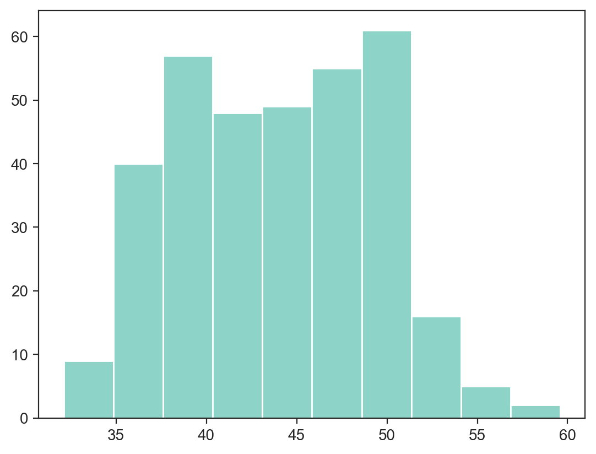
sns.scatterplot(data=penguins, x="bill_length_mm", y="flipper_length_mm") ;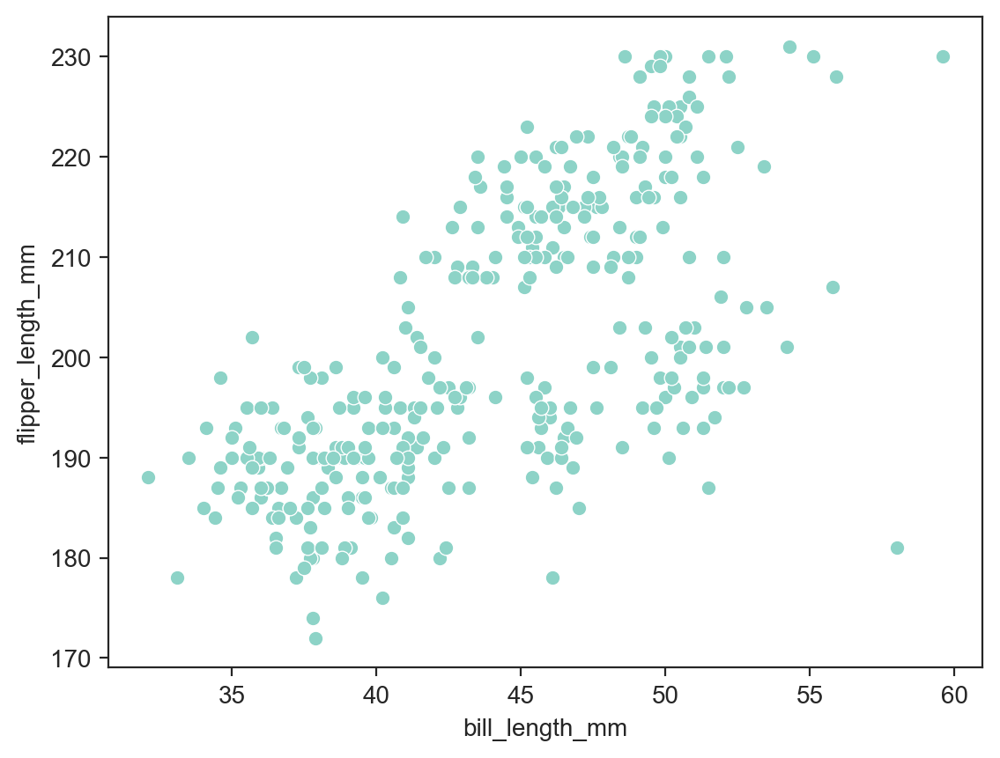
sns.scatterplot(data=penguins, x="bill_length_mm", y="flipper_length_mm", hue="species") ;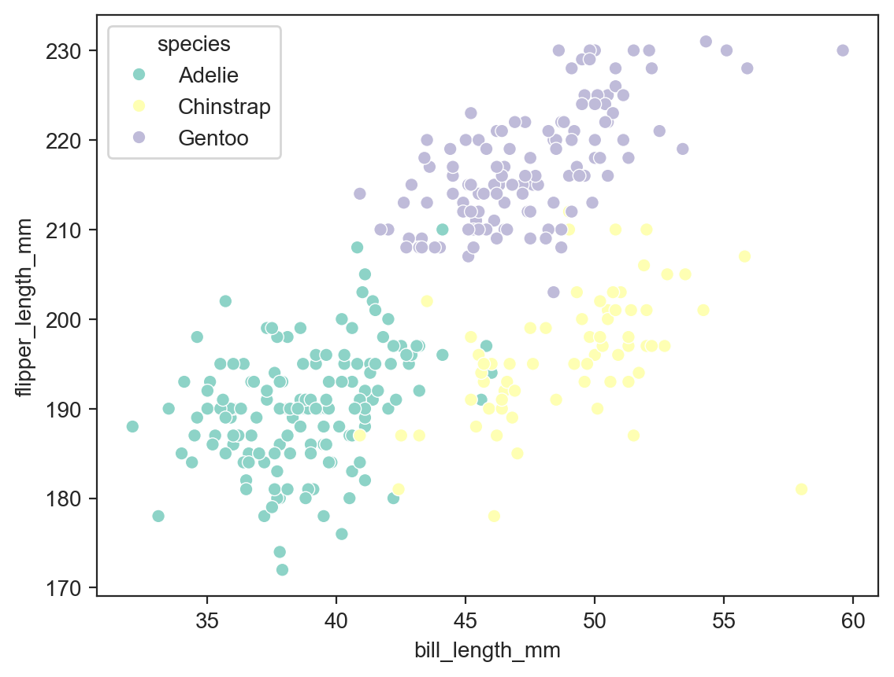
sns.scatterplot(data=penguins, x="bill_length_mm", y="flipper_length_mm", hue="species", style="sex") ;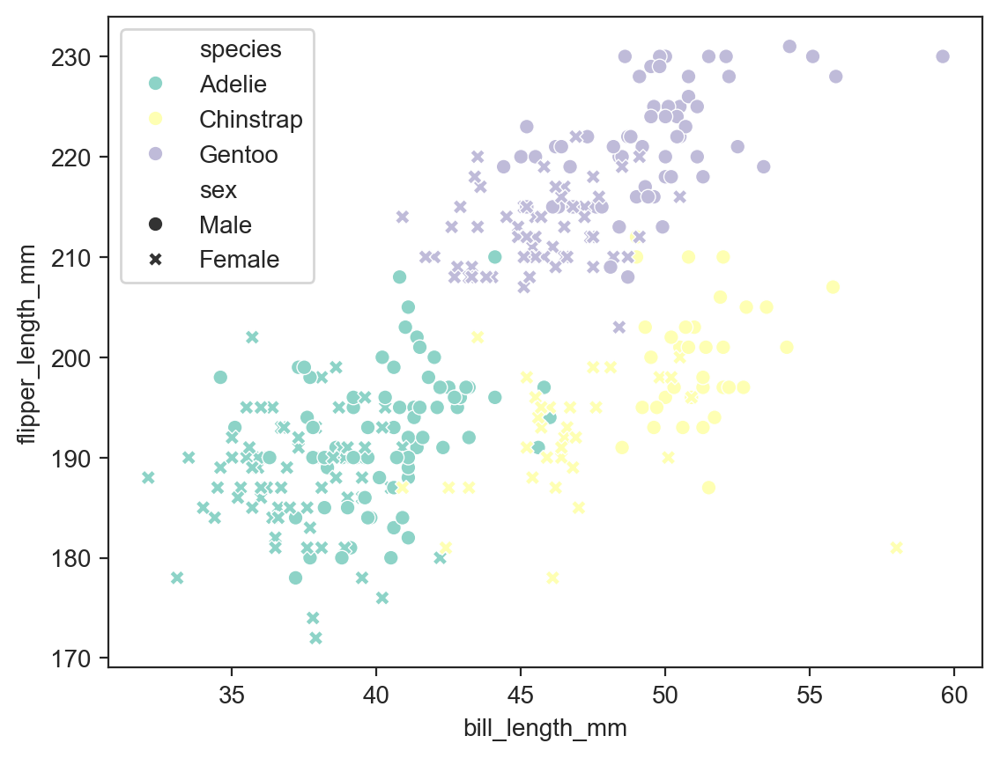
sns.scatterplot(data=penguins, x="bill_length_mm", y="flipper_length_mm", hue="species",
style="sex", size="body_mass_g") ;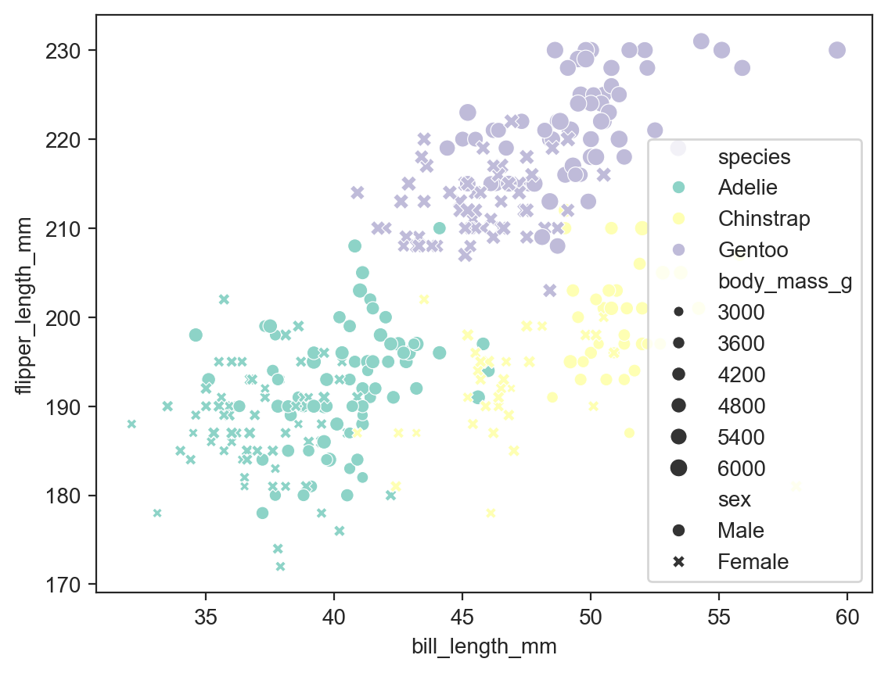
def legend_outside():
plt.legend(bbox_to_anchor=(1.05, 1), loc='upper left', borderaxespad=0)sns.scatterplot(data=penguins, x="bill_length_mm", y="flipper_length_mm", hue="species", style="sex", size="body_mass_g") ;
legend_outside()
plt.title("Penguin measurements")
plt.ylabel("flipper length (mm)")
plt.xlabel("bill length in (mm)") ;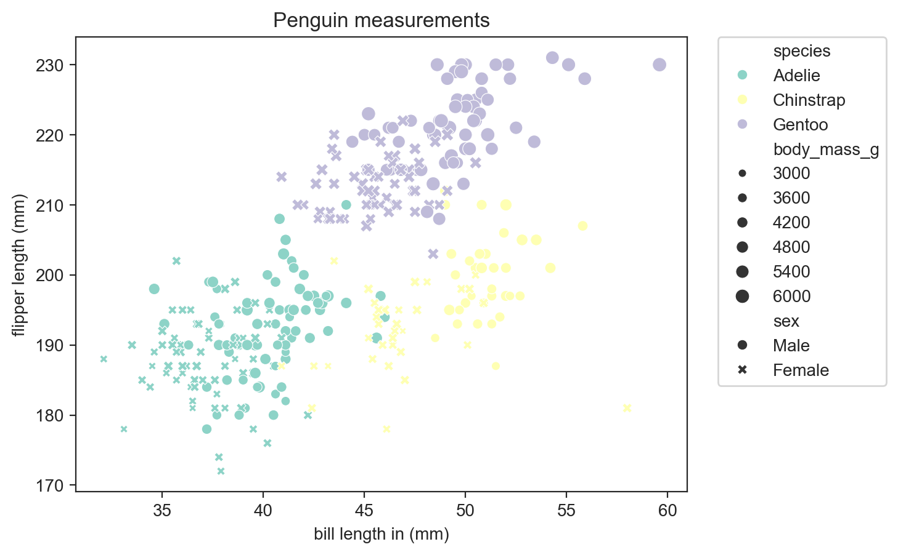
Wide format data:
penguins[['bill_length_mm', 'bill_depth_mm']]| bill_length_mm | bill_depth_mm | |
|---|---|---|
| 0 | 39.1 | 18.7 |
| 1 | 39.5 | 17.4 |
| 2 | 40.3 | 18.0 |
| 3 | NaN | NaN |
| 4 | 36.7 | 19.3 |
| ... | ... | ... |
| 339 | NaN | NaN |
| 340 | 46.8 | 14.3 |
| 341 | 50.4 | 15.7 |
| 342 | 45.2 | 14.8 |
| 343 | 49.9 | 16.1 |
344 rows × 2 columns
Long format data:
long_df = penguins.melt(value_vars=['bill_length_mm', 'bill_depth_mm'])
long_df| variable | value | |
|---|---|---|
| 0 | bill_length_mm | 39.1 |
| 1 | bill_length_mm | 39.5 |
| 2 | bill_length_mm | 40.3 |
| 3 | bill_length_mm | NaN |
| 4 | bill_length_mm | 36.7 |
| ... | ... | ... |
| 683 | bill_depth_mm | NaN |
| 684 | bill_depth_mm | 14.3 |
| 685 | bill_depth_mm | 15.7 |
| 686 | bill_depth_mm | 14.8 |
| 687 | bill_depth_mm | 16.1 |
688 rows × 2 columns
long format is required when you want a number of columns to appear as a “variable” in the plot. As in the example below where the color “variable” reflects whether the point is bill_depth_mm or bill_length_mm.
Retain other information for each observation:
long_df = penguins.melt(id_vars=['species', 'body_mass_g', 'island'], value_vars=['bill_length_mm', 'bill_depth_mm'])
long_df| species | body_mass_g | island | variable | value | |
|---|---|---|---|---|---|
| 0 | Adelie | 3750.0 | Torgersen | bill_length_mm | 39.1 |
| 1 | Adelie | 3800.0 | Torgersen | bill_length_mm | 39.5 |
| 2 | Adelie | 3250.0 | Torgersen | bill_length_mm | 40.3 |
| 3 | Adelie | NaN | Torgersen | bill_length_mm | NaN |
| 4 | Adelie | 3450.0 | Torgersen | bill_length_mm | 36.7 |
| ... | ... | ... | ... | ... | ... |
| 683 | Gentoo | NaN | Biscoe | bill_depth_mm | NaN |
| 684 | Gentoo | 4850.0 | Biscoe | bill_depth_mm | 14.3 |
| 685 | Gentoo | 5750.0 | Biscoe | bill_depth_mm | 15.7 |
| 686 | Gentoo | 5200.0 | Biscoe | bill_depth_mm | 14.8 |
| 687 | Gentoo | 5400.0 | Biscoe | bill_depth_mm | 16.1 |
688 rows × 5 columns
sns.scatterplot(data=long_df, x='body_mass_g', y='value', hue='variable', style='species')
legend_outside()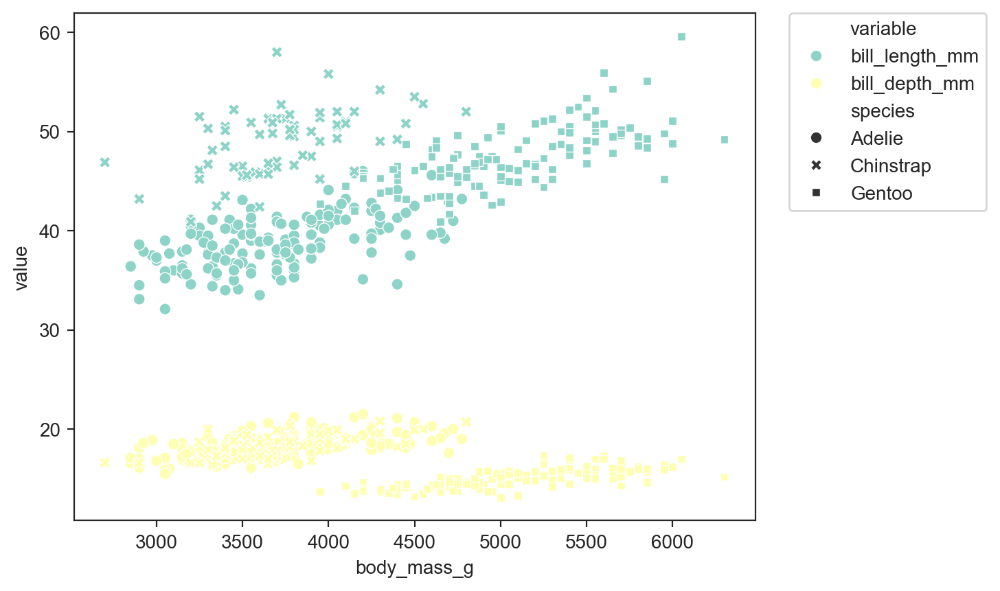
sns.boxplot(data=long_df, x='species', y='value', hue='variable') ;
sns.boxplot(data=long_df, x='variable', y='value', hue='species') ;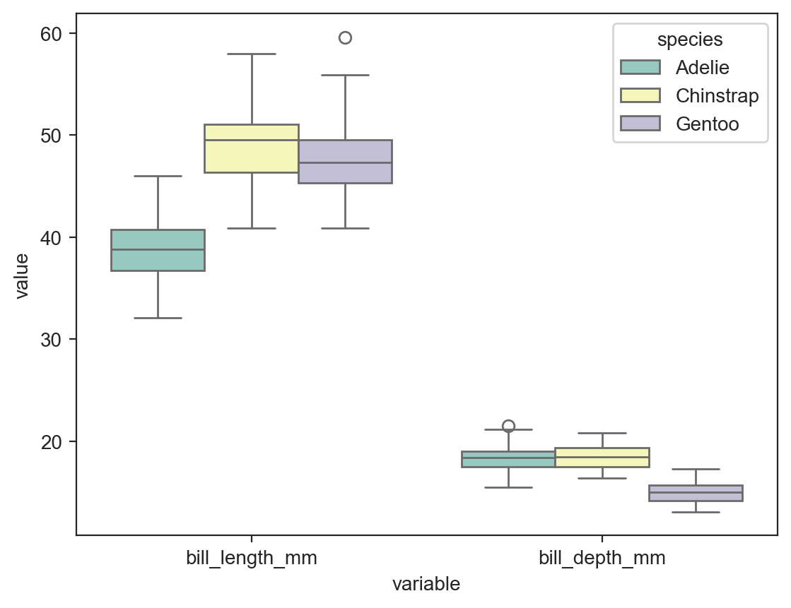
sns.boxplot(data=long_df, x='species', y='value', hue='variable') ;
g = sns.FacetGrid(penguins, col="island")
g ;
Map plotting to each facet:
g = sns.FacetGrid(penguins, col="island", hue="species") ;
g.map(sns.scatterplot, "bill_length_mm", "flipper_length_mm") ;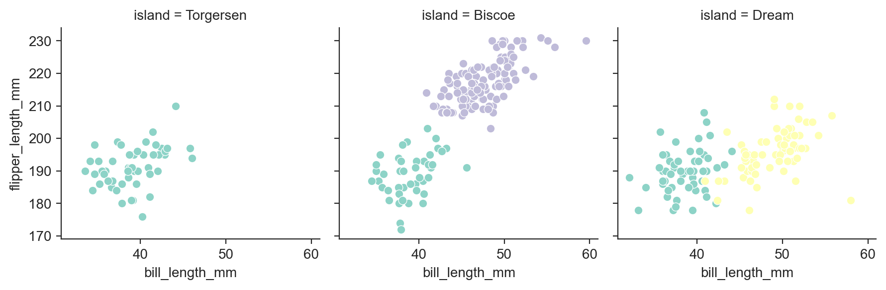
Grid of facets representing combinations of two variables:
g = sns.FacetGrid(penguins, row="sex", col="island", hue="species") ;
g.map(sns.scatterplot, "bill_length_mm", "flipper_length_mm") ;
g = sns.FacetGrid(penguins, row="sex", col="island", hue="species") ;
g.map(sns.regplot, "bill_length_mm", "flipper_length_mm") ;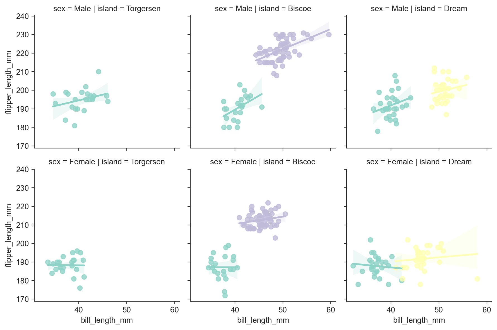
sns.lmplot(data=penguins, x="bill_length_mm", y="flipper_length_mm", row="sex", col="island", hue="species", height=3) ;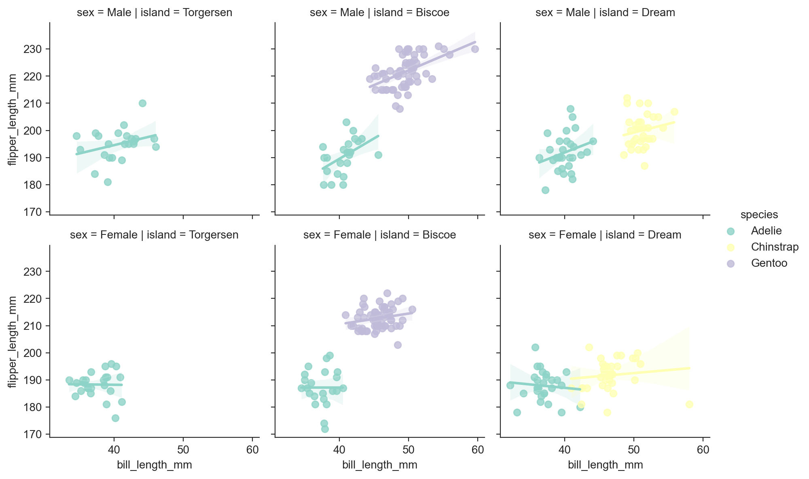
When you use FacetGrid.map(func, "col1", "col2", ...), the function func is passed the values of the columns "col1" and "col2" (and more if needed) as parameters 1 and 2 (args[0], args[1], …). In addition, the function always receives a keyword argument named color=.
def scatter(*args, **kwargs):
return plt.scatter(args[0], args[1], **kwargs)
g = sns.FacetGrid(penguins, row="sex", col="island", hue="species") ;
g.map(scatter, "bill_length_mm", "flipper_length_mm") ;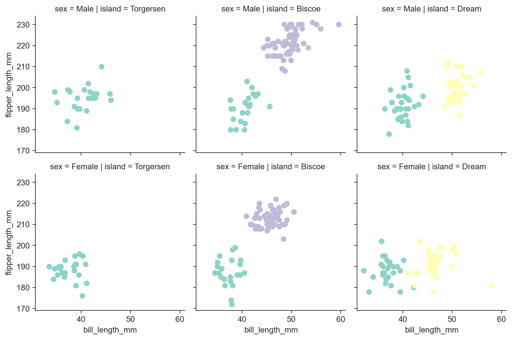
When you use FacetGrid.map_dataframe(func, "col1", "col2", ...), the function func is passed the names "col1" and "col2" (and more if needed) as parameters 1 and 2 (args[0], args[1], …), and the filtered dataframe as keyword argument data=. In addition, the function always receives a keyword argument named color=.
def scatterplot(*args, **kwargs):
return sns.scatterplot(x=args[0], y=args[1], **kwargs)
g = sns.FacetGrid(penguins, row="sex", col="island", hue="species") ;
g.map_dataframe(scatterplot, "bill_length_mm", "flipper_length_mm") ;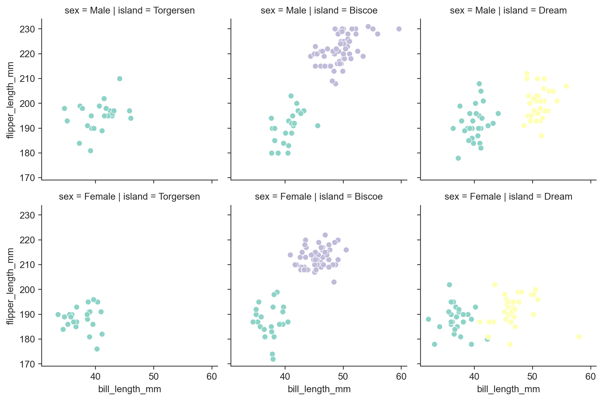
g = sns.FacetGrid(penguins, row="sex", col="island", hue="species") ;
g.map(sns.histplot, "bill_length_mm") ;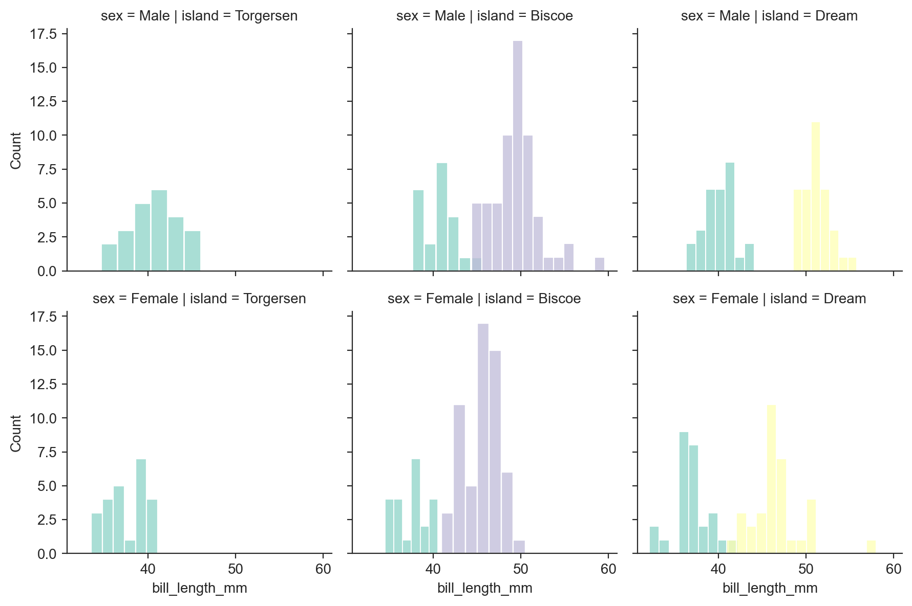
g = sns.FacetGrid(penguins, row="sex", col="island", hue="species") ;
g.map(sns.kdeplot, "bill_length_mm") ;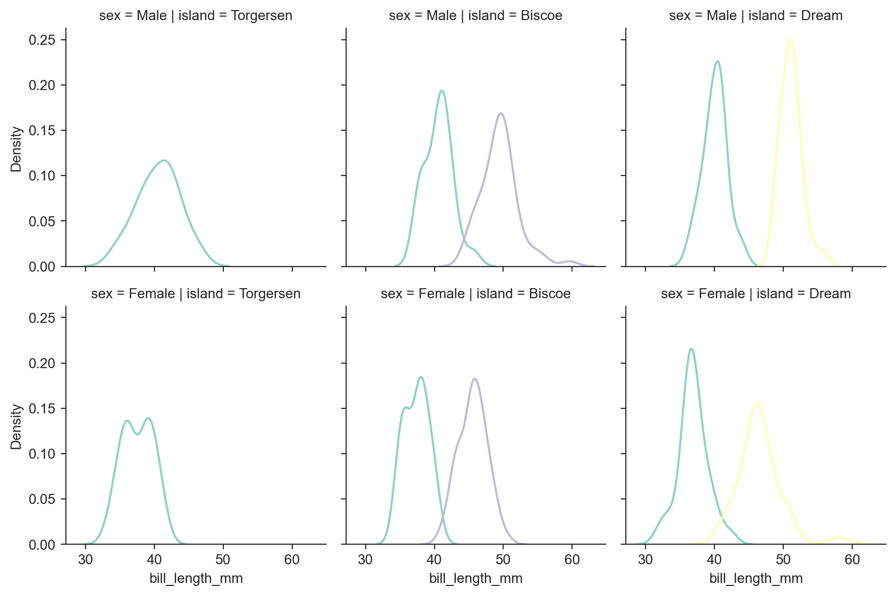
sns.pairplot(penguins, hue="species") ;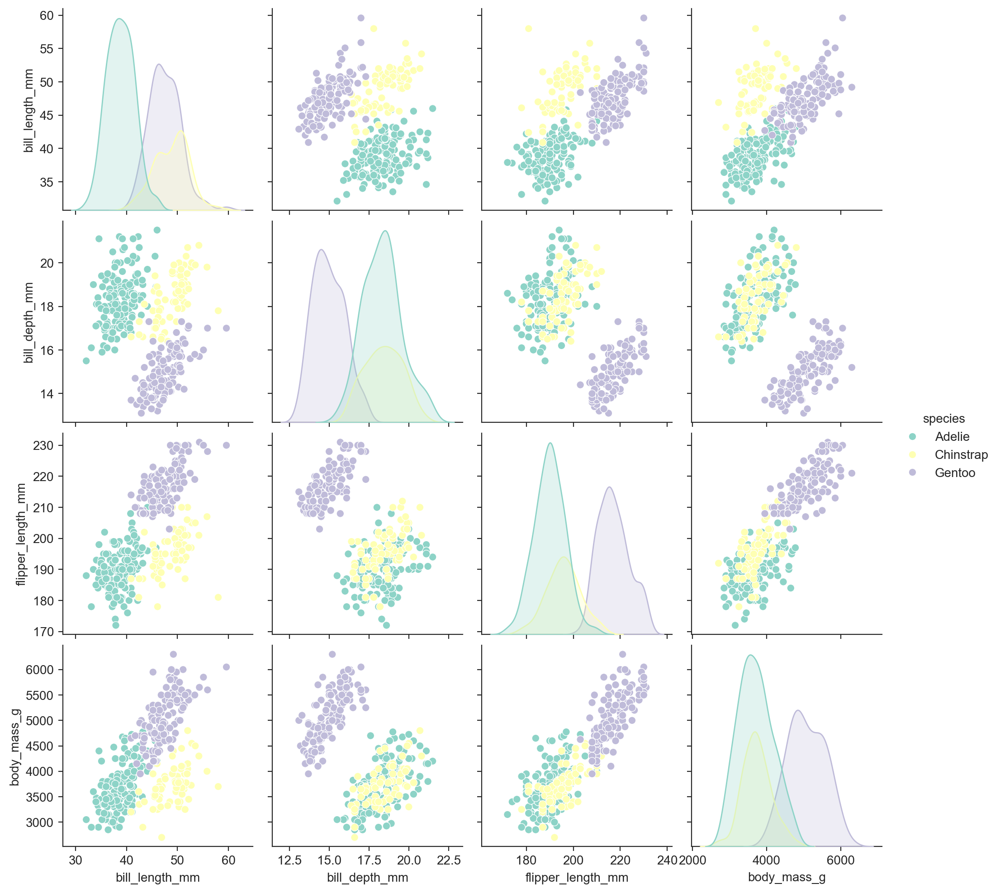
sns.pairplot(penguins, hue="sex") ;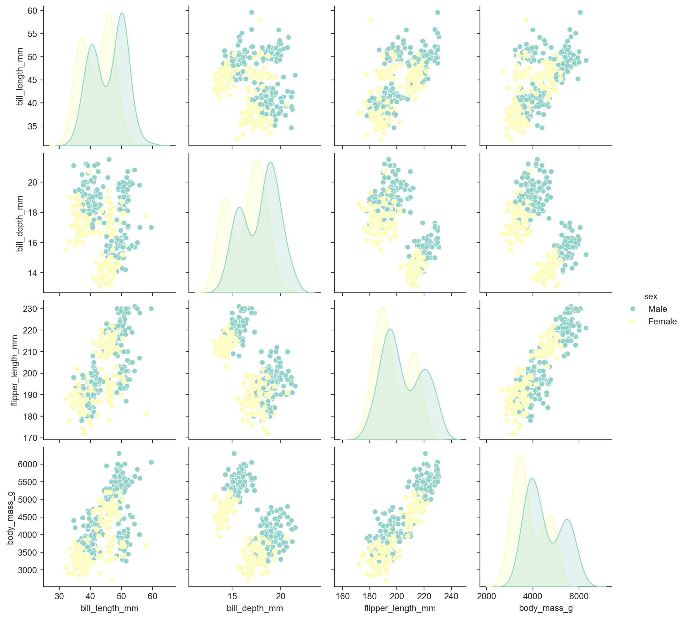